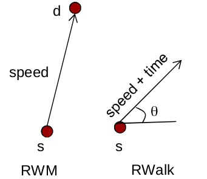

As with any analysis, the basics start from idealized scenarios. In terms of modeling, this would be random mobility. The historical viewpoint on this comes from Brownian Motion, which is the model of the movement of particles suspended in a liquid or gas caused by collisions with molecules of the surrounding medium. Of course, this is not the most realistic since vehicles don't just move randomly and hit each other, and so, our most basic models in random mobility come from a movement that is random to a certain extent but obeys tunable constraints. The two most basic models of random mobility are:
Random Walk: For every new interval t, each node randomly and uniformly chooses its new direction θ(t) from an interval [0,2π]. The new speed follows a Gaussian distribution in [0,Vmax]. Therefore, during a time interval t, the node moves with the velocity vector [v(t)cos(θ(t)),v(t)sin(θ(t))]. If the node moves according to the above rules and reaches the boundary of a simulation field, the leaving node is bounced back to the simulation field with the angle of π−θ(t) or θ(t), respectively. This effect is called the border effect.
Random Waypoint: We first choose a rectangular area of size Xmax×Ymax, and the total number of nodes N in this area. We then choose a random initial location (x,y) for each node, where x is uniformly distributed over [Xmin,Xmax] and y is uniformly distributed over [Ymin,Ymax]. Every node is then assigned a destination (x′,y′) also uniformly distributed over the two-dimensional area, and a speed v, which is uniformly distributed over [Vmin,Vmax], where Vmax is the user-assigned maximum allowed speed. A node will then start traveling toward the destination on a straight line at the chosen speed v. Upon reaching the destination (x0,y0), the node stays there for some pause time, either constant or randomly chosen from a certain distribution. Upon expiration of the pause time, the next destination and speed are again chosen in the same way and the process repeats until the simulation ends.

§ Limitations of the Random Waypoint and Walk models
These models are not able to capture a lot of realistic scenarios, the major ones listed as follows:
Temporal Dependency of Velocity: In these models, the velocity of the mobile node is a memoryless random process since the values at each epoch are independent of the previous one. Thus, sudden mobility behaviors are possible in these models, including sharp turns, sudden acceleration, or sudden stop. However, in real situations, these values change smoothly.
Spatial Dependency of Velocity: In these models, each node moves independently of all the other nodes. However, in real scenarios, like battlefield communication or museum touring, these values may be correlated in different ways, which is not taken into account in these models
Geographic Restriction of Movement: In these models, the mobile nodes are allowed to move freely without any restrictions, but this might not be the case in real-life scenarios, like driving for instance, where the agents are contained in their movement by the roads, obstacles, etc.
This model addresses the drawback of Geographic restriction on movement. The general idea is that initially, the nodes are placed randomly on the edges of the graph. Then for each node, a destination is randomly chosen and the node moves towards this destination through the shortest path along the edges. Upon arrival, the node pauses for T time and again chooses a new destination for the next movement. This procedure is repeated until the end of the simulation. In the Manhattan Model, these edges are in the form of a grid. Thus, this is just an extension of the Random Waypoint idea, but with added constraints on movement
This model addresses the drawback of spatial dependency of the velocity in the random models. Nodes are categorized into groups. Each group has a center, which is either a logical center or a group leader node. For the sake of simplicity, we assume that the center is the group leader. Thus, each group is composed of one leader and many members. The movement of the group leader determines the mobility behavior of the entire group. The movement of group leader at time t can be represented by motion vector V^t{Group}. This motion vector can be either randomly chosen or carefully designed based on certain predefined paths. Each member of this group deviates from this general motion vector to some degree, for example, each mobile node could be randomly placed in the neighborhood of the leader. The velocity of each member can be expressed as V^t{Group} + Ri , where Ri is the deviation of each member from the group leader's velocity.
This model addresses the correlation of velocities. In this model, the velocity of the mobile node is assumed to be correlated over time and modeled as a Gauss-Markov stochastic process:
Rt=αˉR(t−1)+(1−αˉ)R+1−αˉ2Xˉt−1
Here, R(t) can be either speed or direction of movement, which is shown to be dependent on an autocorrelation function sampled from a Gaussian distribution Xˉ∼N(0,σ). The value of R at any time point is correlated to a certain extent with its value at time t−1 , and this is modeled through the parameter αˉ=e−β∈[0,1]. When αˉ=0, this equation decomposes to Brownian motion since the moton at any two points only depends on its current value and the Gaussian Noise Xˉ, while at αˉ=1 this represents a linear motion since the new variable perfectly depends on the previous variable, without any added noise. By tuning this αˉ, this model is capable of duplicating different kinds of mobility behaviors lying on the spectrum of Linear and Brownian motion.
Another mobility model considering the temporal dependency of velocity over various time slots is the Smooth Random Mobility Model. Here, instead of the sharp turns and accelerations as proposed in the Random Waypoint Model, these values are changed smoothly. It is observed that mobile nodes in real life tend to move at certain preferred speeds, rather than at speeds purely uniformly distributed in the range. Therefore, in the Smooth Random Mobility model, the speed within the set of preferred speed values has a high probability, while a uniform distribution is assumed on the remaining part of the entire interval
Vpref∼[V1,V2,...,Vn]
The frequency of speed change is assumed to be a Poisson process. Upon an event of speed change, a new target speed is chosen according to the probability distribution function of speed above and the speed of the mobile node is changed incrementally from the current speed to the targeted new speed by acceleration or deceleration a(t) . The probability distribution function of acceleration or deceleration a(t) is uniformly distributed among [0,amax] and [amin,0], respectively. The new speed depends on the previous speed:
Vt=Vt−1+a(t)(Vt−Vt−1)
A similar approach is followed for the direction update with angular accelerations.
One of the most important factors that play a role in the analysis of the various parameters associated with these networks is the stability of values. In the evolution of network states, there is usually an initial phase where the process variables change over time, and this phase is called a Transient Phase. During this transient phase, analyzing these variables is not possible as any value that they predict for the system is not a good indicator. As this phase passes, these values start to stabilize and as they stop varying over time units on an average, a Steady State is reached. This is the point at which a feasible network analysis starts becoming possible. In case the network transitions into something else over time, another steady state is reached after an intermediate transient state. The problem comes when these transient states start lasting longer or start happening more frequently since then stable analysis of the system becomes increasingly difficult. Thus, one of the major areas of research had been in figuring out a way to effectively predict these steady-state values and use them in analyzing the models. The seminal work on this was done by J-Y Le Boudec at EPFL, where the team developed a method called Palm Calculus and used it to predict the steady-state distributions of all major random mobility models.
Random Mobility Models are very powerful solutions to obtain the fast and controllable output. They are easily configurable and reproducible, and there are various models on different geometric data. Moreover, after the issues removed through palm calculus, they are able to offer decent steady-state characteristics
Random Models have to be well understood and analyzed for them to make sense. If not carefully modeled, as in the case of RWP with the initial selection of speed and mobility, they may never generate stable steady-state characteristics. Thus, we might not get expected mobility patterns, which is a bummer for routing protocols.
While Random models provide good statistics, they are not able to provide low scale mobility patterns like slow increase/decrease of speeds, the interaction between vehicles, etc.